腾讯新闻底层页升级技术总结
1 业务场景介绍
腾讯新闻底层页是核心业务场景，底层页服务请求QPS 3.5万+，单日请求量10亿+。涉及到五大场景：腾讯新闻客户端、腾讯新闻微信与QQ插件、腾讯网、腾讯新闻分享页、腾讯新闻小程序。
当用户从列表入口列表点击图文或者问答文章，进入相应的底层页。底层页展示的信息包括：标题、摘要、作者信息、正文信息、点赞信息等，如下图所示。
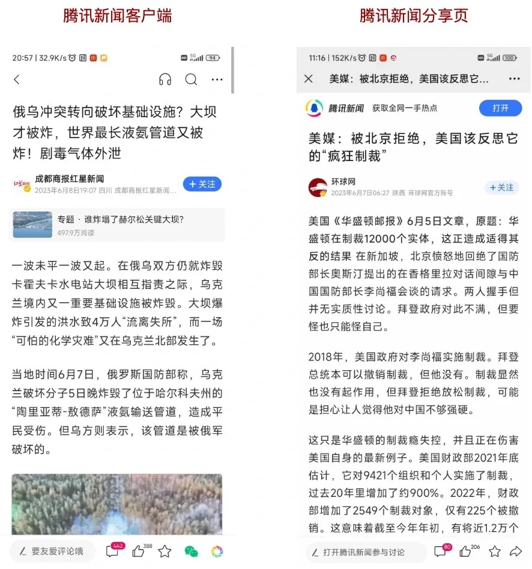
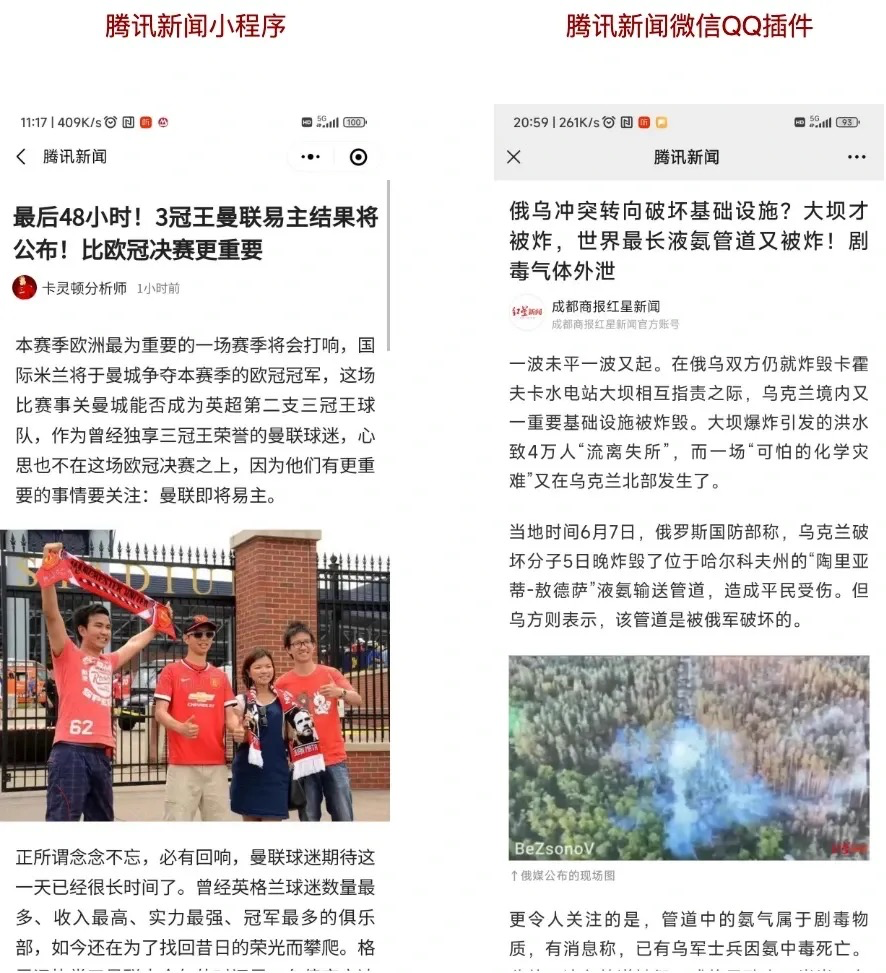
2 所面临的问题
代码历史债务高
-
底层页接口代码历史债务高，代码总量约10W+，缺乏设计、业务逻辑混乱、层次关系不明确、代码复杂度极高（核心函数长度超过2000行），甚至存在明显的bug等。
-
历史遗留的代码很多，存在大量实际功能已下线但是还保留的代码，理解和维护成本极高，例如存在330版本之前的代码（10年之前版本）。
研发效率低
-
各场景同一个需求需要各自开发，例如底层页增加点赞开关控制、增加点赞类型需要全场景统一生效的需求需要各场景开发，五个场景需要5人日开发，极大减缓业务迭代效率，统一场景后只需要1人日开发。
-
底层页各场景开发框架不统一，分别使用butterfly、gin、sodoo(PHP)框架，这些框架与公司基础能力契合度不高而且维护成本高。
服务稳定性差
原底层页PHP服务稳定性极差，存在用户体验受损、服务可观测性不高等问题
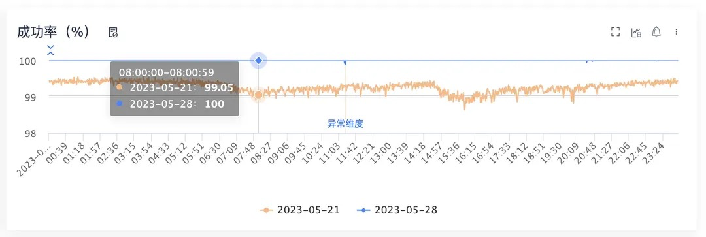
- PHP的生态已经和公司发展趋势或者说是行业趋势基本脱轨，PHP语言的性能、配套监控、RPC调用基本不能适应开发需要。目前PHP性能是影响服务稳定性最重要的原因之一，升级前接口性能P99.9耗时在3800ms+，稳定性长期维持在两个9左右。
3 清理历史债务-重构10W行PHP代码
端内frontsystem代码服务情况复杂，已经存在近10年、历史包袱及其重，PHP有效代码总行数超过40W+。本次重构代码按照路径所涉及代码按照类的维度统计，统计预计10W行代码左右。
3.1 面临的挑战
首先代码的圈复杂度达到了1500+，一般代码超过50+已经非常复杂。代码复杂度超过50+整个项目都是理解起来是非常困难的。这里举几个例子例子：Apache HTTP Server：Apache HTTP Server是一个广泛使用的Web服务器软件，其代码中，圈复杂度的平均值大约在10到20之间。OpenSSL：OpenSSL是一个用于加密和安全通信的开源库，代码总行数在50W行数，圈复杂度的平均值大约在10到20之间，我们要重构的底层页代码平均复杂度达到了66.25，最高的代码复杂度达到了1234。
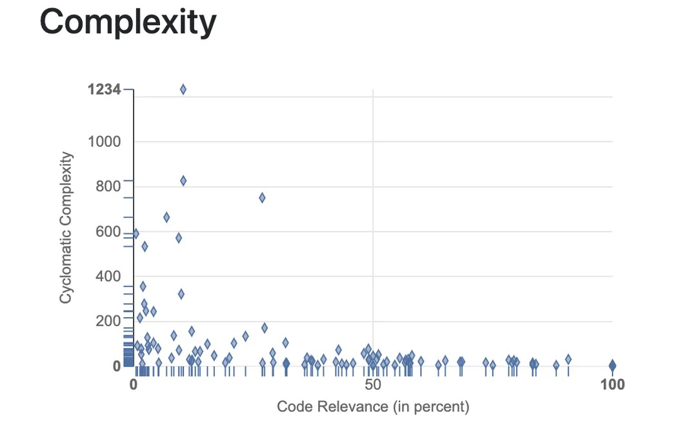
代码复杂度分部图
使用静态分析代码整体的项目后的PHP错误数高达715处，警告数达到25000+，说明了历史代码的存在诸多问题。
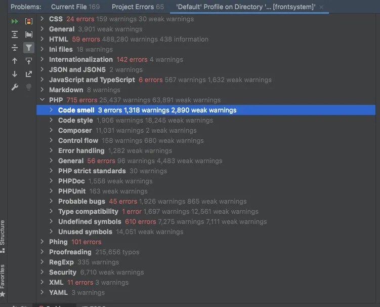
代码中错误数提示
其次接口依赖的类很多，一个类的行数可能超过3000行，方法调用的类图很多调用层级深度超过20层、依赖120+个类文件，超长的执行路径、很多废弃的实现和类仍旧、重复调用，大量代码性能很差、有很大的优化空间。
然后是代码的可测性，，底层页相关的代码没有代码没有单元测试覆盖，这样难以保证代码线上的稳定，会导致代码运行的稳定性。
落地页、底层页调用链路图
最后没有完善的文档，底层页的具体逻辑对于开发人员是空白的，具体执行流程、依赖哪些服务、依赖哪些Redis、需要将哪些数据上报、输出的字段的含义是什么？这些在刚接手时都是不清楚的。
3.2 解决思路
梳理核心输出字段：核心字段是保证底层页能否正常展示的，这些字段我们一定要在重写的过程中，例如：图文正文、视频VID、标题、作者、广告数据、核心控制字段（广告开关等）等。
根据输出字段实现相应逻辑：代码具体实现已无法具体了解，，用接口最终输出信息，依据相对有限的数据字段反查具体实现，客户端依赖的展示字段可以明确的。
验证输出字段正确性：通过离线DIFF方式，将新老服务输出结果进行异步上报，将上报的DIFF信息进行验证。DIFF验证通过后在，进行实验验证保证升级后符合预期。
3.3 工具助力，加速升级
3.3.1 使用xhprof生成调用流程图
为了更好梳理代码以及业务流程，我们先使用了xhprof能力分析代码具体调用链路图（见之前的调用链路）。调用链路图可以作为一个底层页PHP服务一个整体的概览。可以帮助我们提供执行流程、依赖的函数以及类、调用耗时三个基本信息。
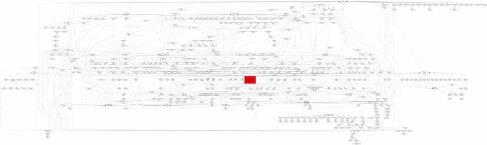
调用流程图
3.3.2 使用Xdebug生成代码执行路径
在之后的重构我们采用借助Xdebug、PHP CodeCoverage搭建，实现每一次服务请求到具体代码执行路径。Xdebug和PHPCodeCoverage结合可以让我们了解每一次代码具体执行情况。
请求代码覆盖目录：
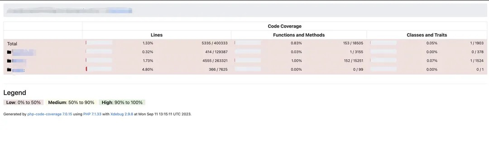
代码请求目录
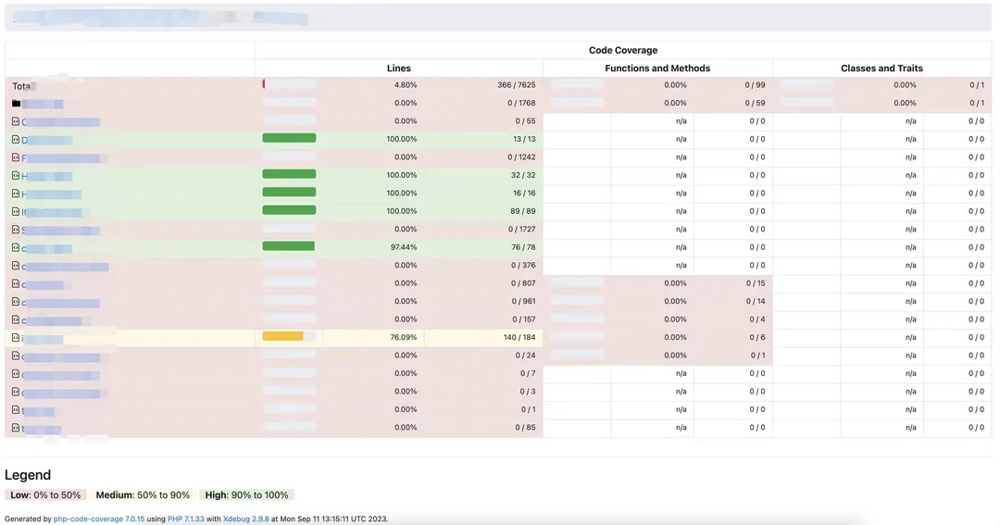
代码具体执行
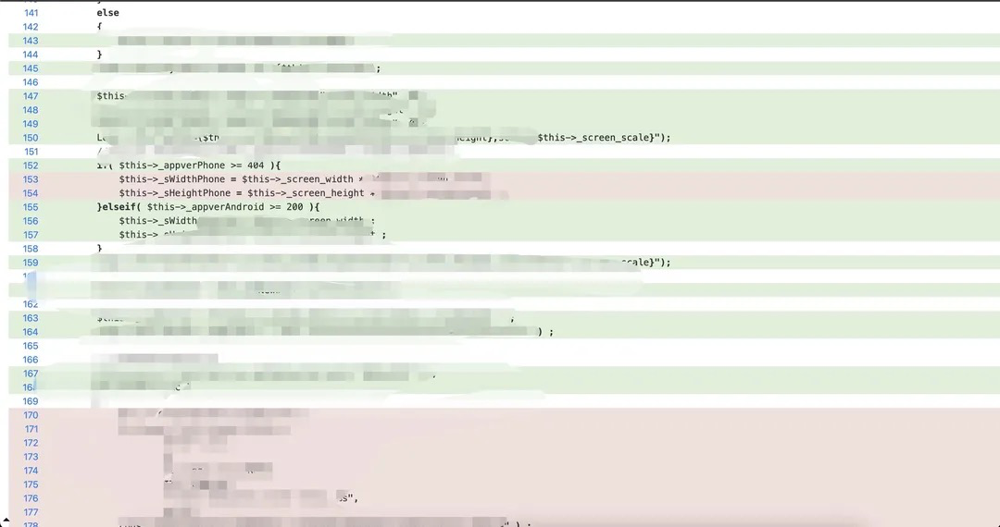
(绿色为请求覆盖代码，粉色为非覆盖代码)
两个方式极大加速了我们重构的进度，更好的分析之前服务代码情况。尤其是第二个能力，我们经常会在代码里遇到分支条件的判断如版本号、上游下发的标识、文章类型、开关等各种条件判断，使用第二种能力我们可以模拟不同的请求，查看具体代码执行路径。另一方面一些服务内部的交互不容易通过接口梳理。
另外结合trpc-gateway流量回放插件，进行流量的copy，我们对新copy的流量到开启代码覆盖检测配置的新服务中，可以将采样所有的请求聚合生成对应的覆盖代码文件，这样我们可以基本得到接口各种参数情况下所执行的代码路径。
网关流量回放插件：
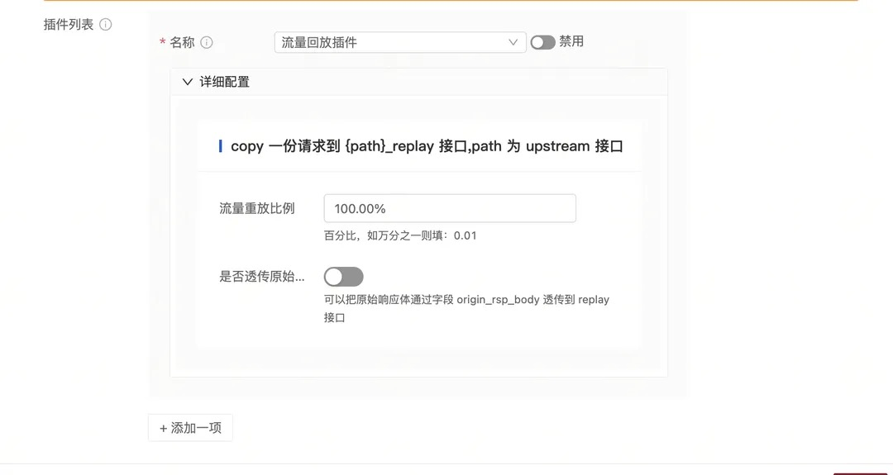
4 提升研发效率-配置化设计
随着业务发展我们需要更合理的架构设计保证业务，升级后架构设计可以稳定支持多场景，采用了配置化方式进行各场景间的隔离。以保证在各端迁移时不相互影响，引发线上故障。
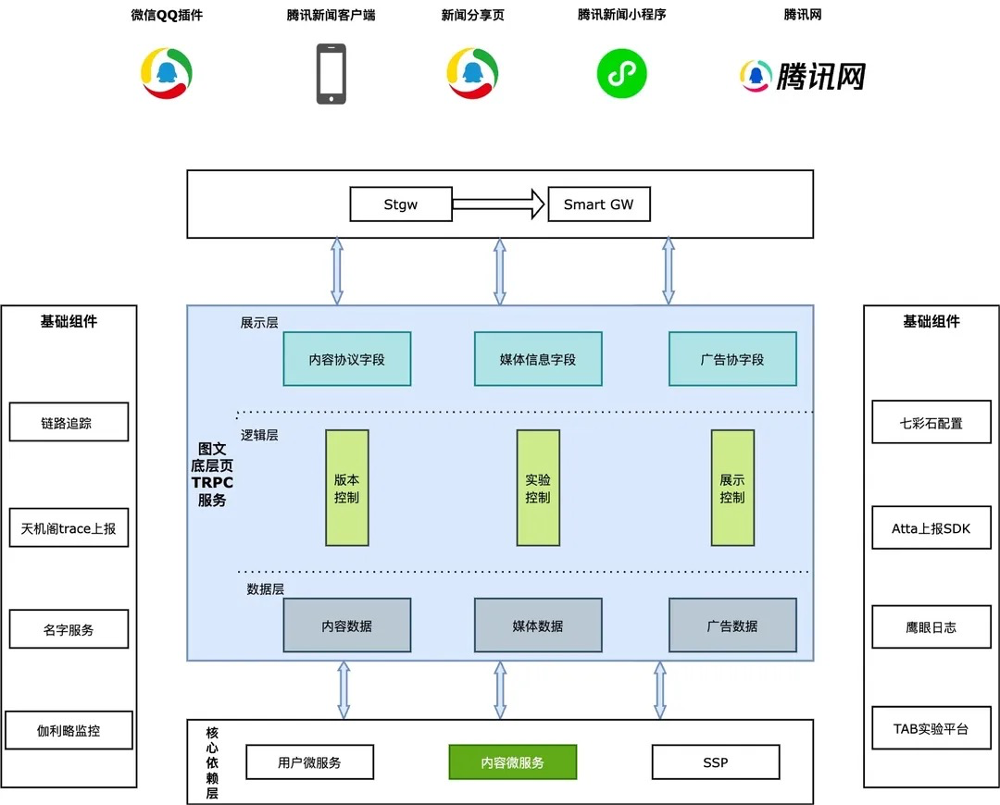
新服务的设计对各端场景都是灵活的， 每个场景只需要简单的配置就可以复用现有新服务的代码，极大提升服务迁移的效率。现有的服务的每个配置化像就像是积木一样，每个场景选择自己所需要积木，搭建不同场景。
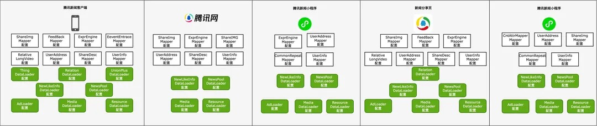
根据请求场景,文章类型加载配置,实现根据不同需求返回不同数据响应,实现差异化配置
分为四层配置体系:
1.全场景统一生效的配置:一些全场景全文章类型核心的字段控制需要统一进行管理.
2.相同文章类型统一配置:为了更好使相同文章类型的通用字段管理.
3.分场景的不同文章类型配置:文章类型配置,不同文章类型数据协议不一样,返回的数据,这一层主要是针对各场景的差异化处理.
4.子场景的不同文章类型配置:与父级场景公用核心的配置,但是需要针对父场景作进一步差异化处理,例如落地页场景的字段需要在不同层级字段下发.
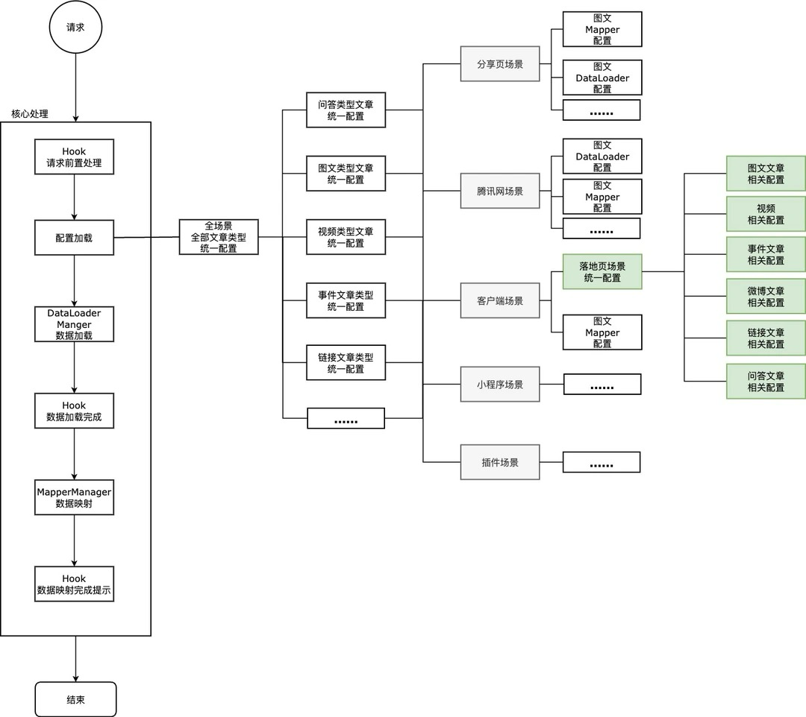
请求配置加载示意图
4.1 配置动态库
无scheme设计，借助底层页强大配置能力，简化开发、发布、上线流程。
强大表达式开源库：golang-expr，简单高效的表达式引擎，支持Golang原生数据结构map、struct、slice等访问，内置30+操作函数，
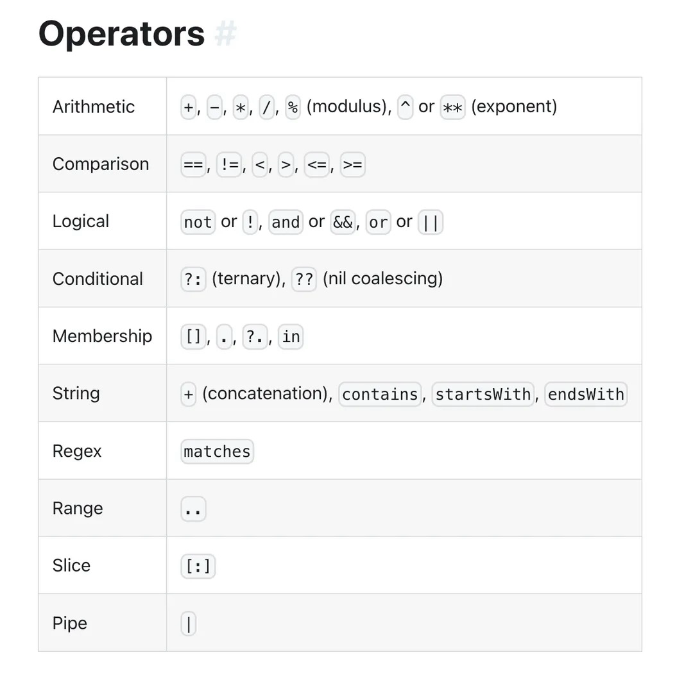
以下官方示例，展示了expr库对结构体、字符串、管道、遍历函数的支持。
1 | user.Age in 18..45 and user.Name not in ["admin", "root"] |
4.2 配置详细实现
底层页基于expr库实现定制化函数、其中包括比较类、转换类、工具类、数据类、常量类：
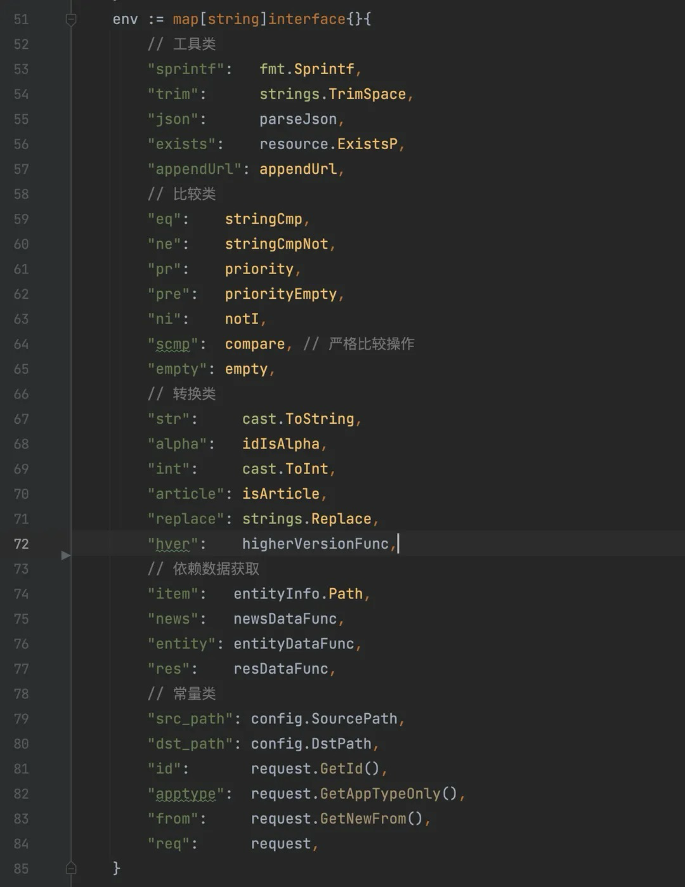
CASE 1: 根据多个字段是否存在或者等于1，输出相应的结果。news函数接受传入的路径，返回当前底层页展示的信息，pathA、 pathB、pathC 三个字段只要有一个符合那么就会将输出字段置为1。
1 | { |
CASE 2: 判空优先级选择，分享文案需要根据文章信息的pathA、pathB，以及默认值“腾讯新闻”字段。
1 | { |
CASE 3: 固定值类型，如字段需要固定的如下载链接和下载地址。
1 | { |
CASE 4: 增加了filter限制的配置信息，例子当中提供的是版本号的限制，我们也可以是任何限制，例如可以针对文章中的数据进行限制。
1 | { |
最后请注意不是任何业务逻辑都能够通过简单配置动态库实现，如果是很复杂的业务逻辑也是需要通过代码实现，否则动态库会变得冗余、复杂导致难以维护。
需要建立一套标准什么是可以动态配置实现什么是可以通过配置实现，例如配置的代码长度、前后依赖关系复杂程度等。
更多功能见：GitHub - antonmedv/expr: Expression language and expression evaluation for Go 。
4.3 配置如何管理
配置管理遇到问题开发时提交配置未经正确验证测试，直接发布上线。其次是 配置发布管理的编写的问题，不能达到自动化，需要人工操作。为了解决上述两个问题引入Rainbow七彩石配置管理能力放入对应的代码。
代码层面接入了rainbow as code，可以保证配置的可测，执行的正确性。
配置代码目录
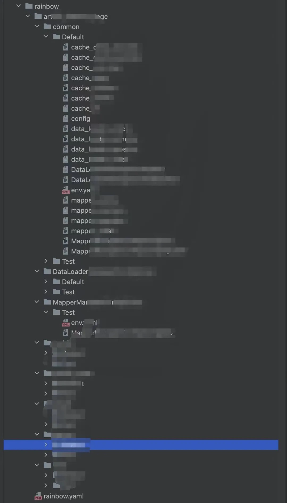
代码配置纳入单测，保证配置可测性：
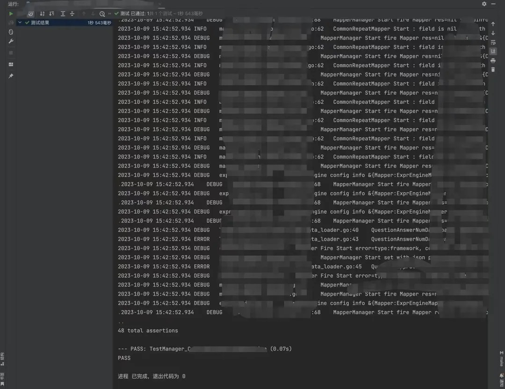
配置的相关单测
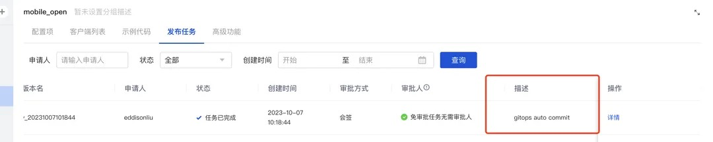
CR审批通过后自动触发七彩石上线
5 提升稳定性-性能优化
在插件底层页重构场景中我们面临的问题比较棘手，原始服务由于本地缓存和依赖文章池耗时比较短会快于当前底层页服务，考虑到短时访问量比较大，峰值比较抖，必须引入本地缓存，降低访问的响应耗时。
由于插件的访问流量存在两个集中，第一是流量时间的集中，每天定点访问的流量较大，短时流量集中，第二是文章的集中，尤其是中午批次的固定推送，个别文章的缓存命中率达到了95%以上。
5.1 针对客户端请求请求缓存
针对是移动客户端整体的请求缓存，功能已经开发完成，主要考虑两点影响链路上的各模块的缓存，已经运营对时效性比较敏感，所以暂时没有对线上开启，等全部切换新的内容微服务后，再考虑是否开启缓存。
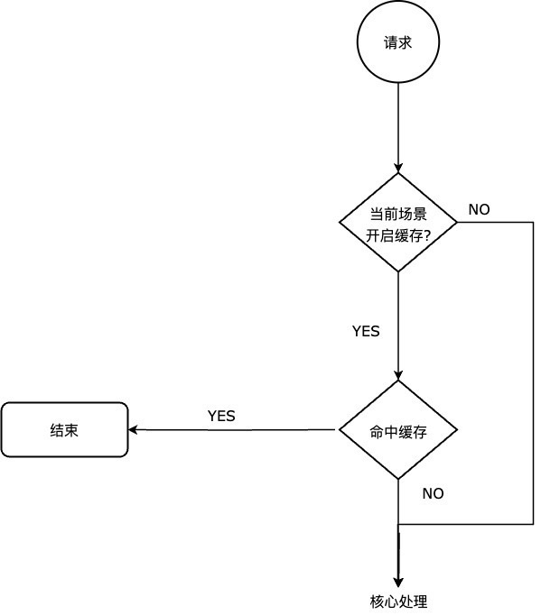
5.2 针对上游服务数据请求缓存
整体服务缓存粒度比较粗，增加了对上游服务的缓存，缓存粒度比较细，针对不同的上游存入不同的localcache，提升缓存命中率，提高服务加载速度，性能提升10%左右。
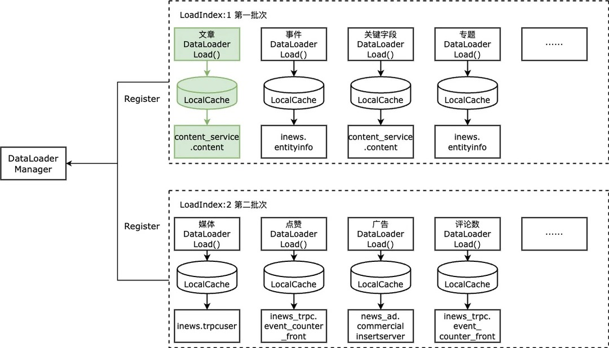
6 底层页服务设计的思考
6.1 逻辑流表达与设计
底层页服务，底层页面向各上游数据集：读取数据并聚合下发，文章关联信息获取的模型表达。
当前服务聚合模型是先按照数据加载按照批次进行加载，按照配置顺序进行映射输出信息。这种设计方式目前基本满足了底层页服务设计需要，当有新的数据源接口接入时，开发相应的逻辑，然后配置到相应的加载批次当中。
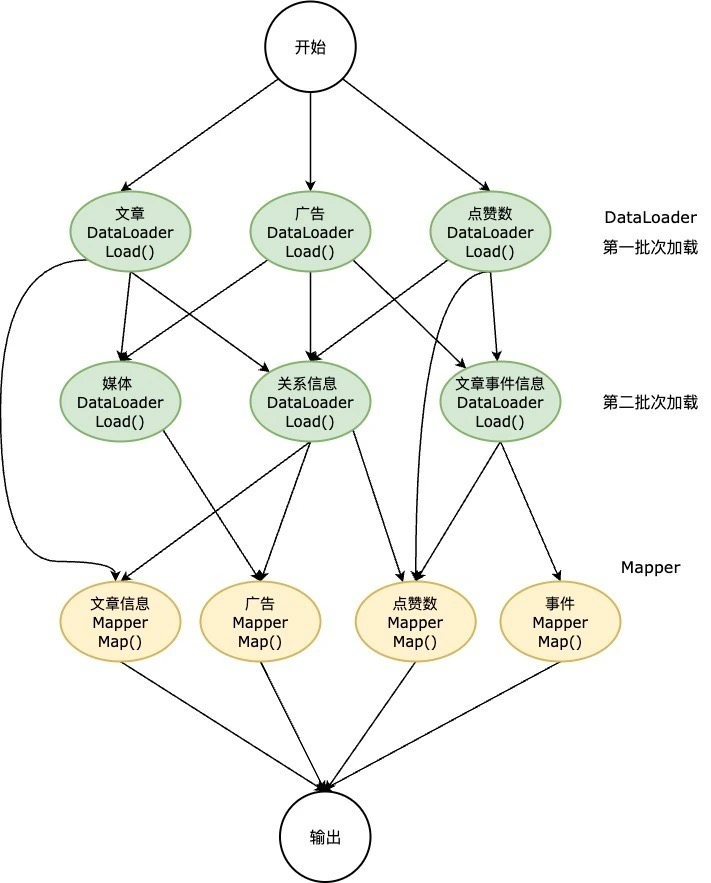
未来可能演进方式：
- 数据加载没有批次限制，每个节点都支持数据加载触发。
- 更灵活的数据获取和映射，数据获取完全不被限制，调度全部配置化，面对复杂场景的聚合效率进一步提升。
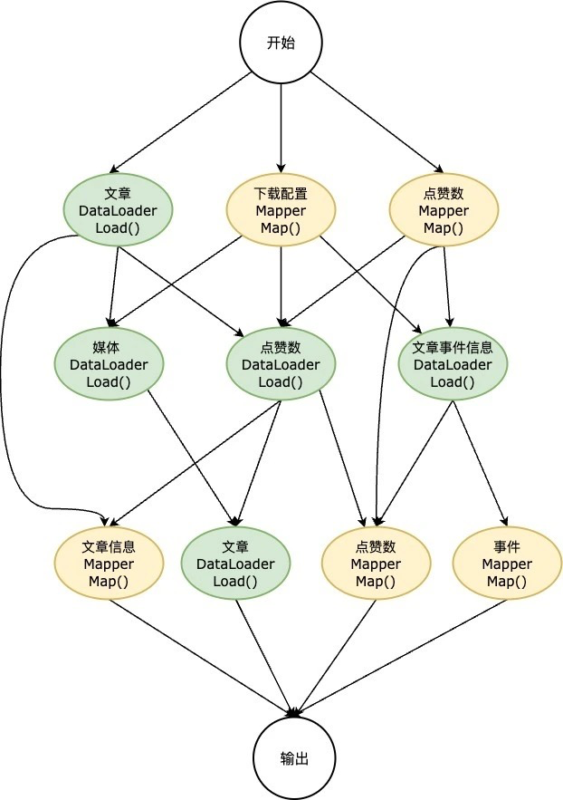
6.2 落地页场景差异化实现
升级时大多复用之前实现DataLoader、Mapper等，但是有很多介质需要支持，例如事件、链接型文章、微博文章。配置上增加落地页场景层级做为客户端场景子集，更好的复用上层已产生字段的能力
虽然落地页场景展示和底层页没有差别，但是对于服务端而言是有一些差异的如：版本识别提示、PUSH文章跳转功能，在数据获取后我们需要进行版本的升级提示。因此落地页需要额外过滤功能，我们把这一功能抽象为Filter。
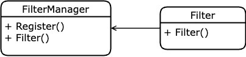
新增:Filter
在每个阶段增加Hook机制，监听每个阶段执行触发相应的Filter。
请求流程增加Hook机制:
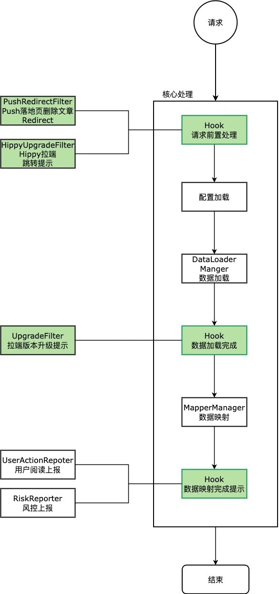